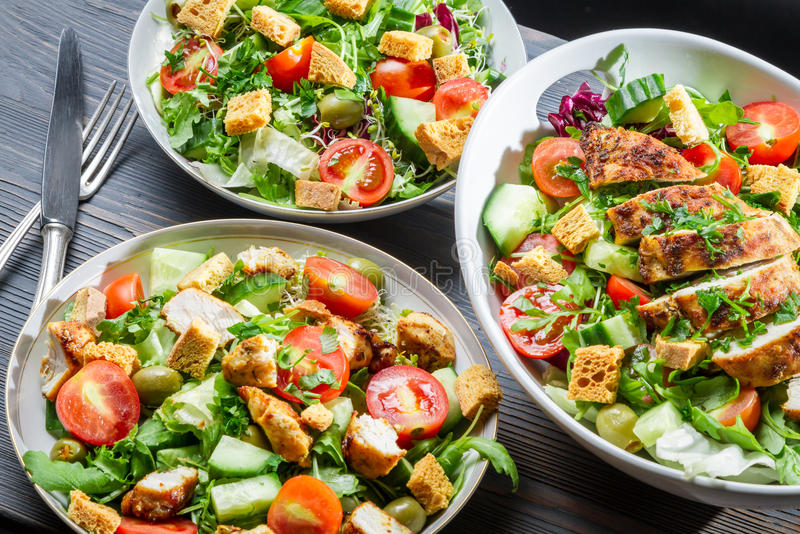
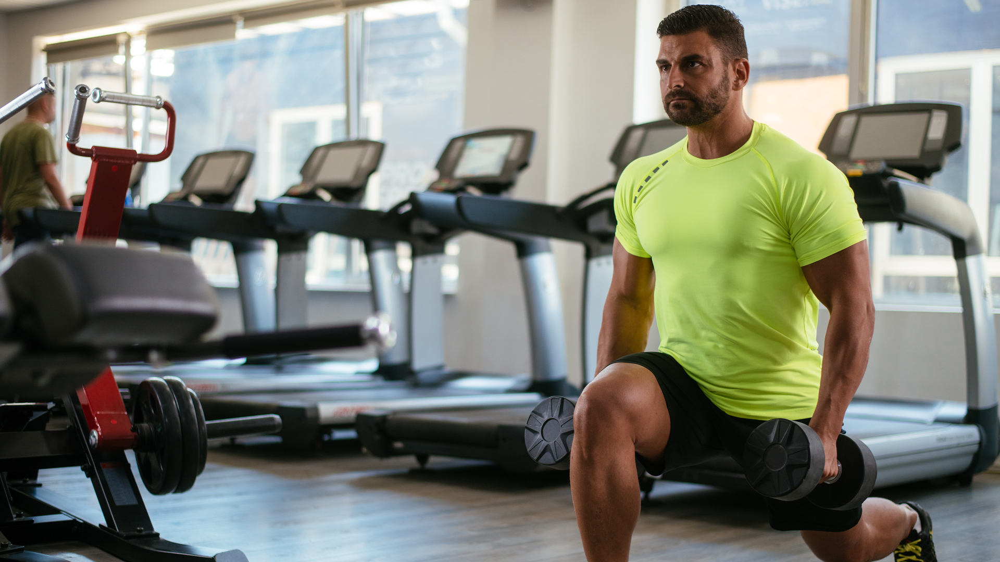
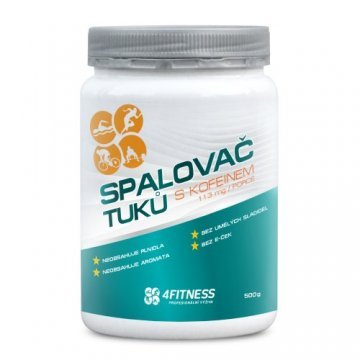
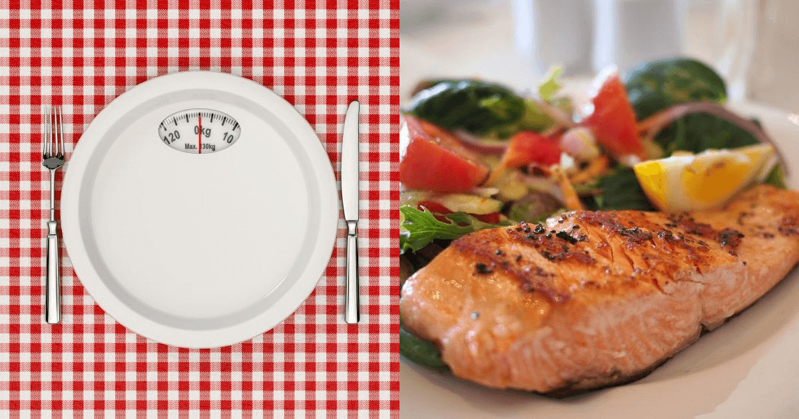
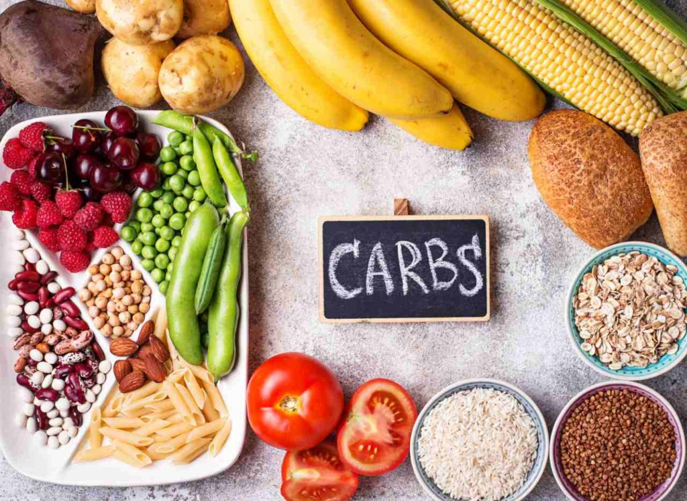
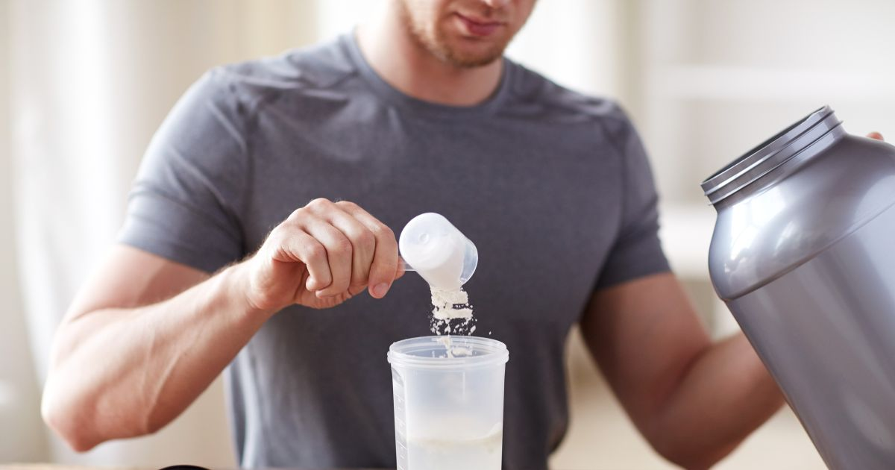
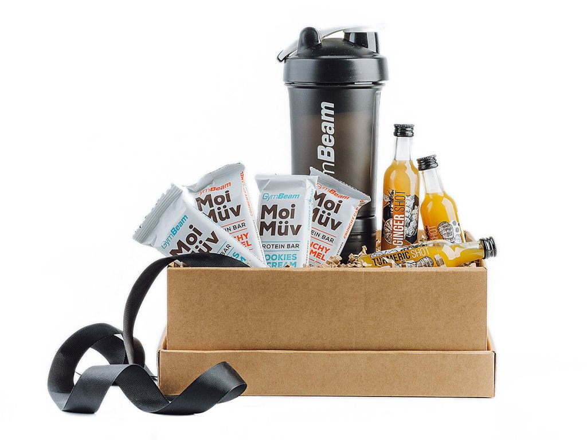
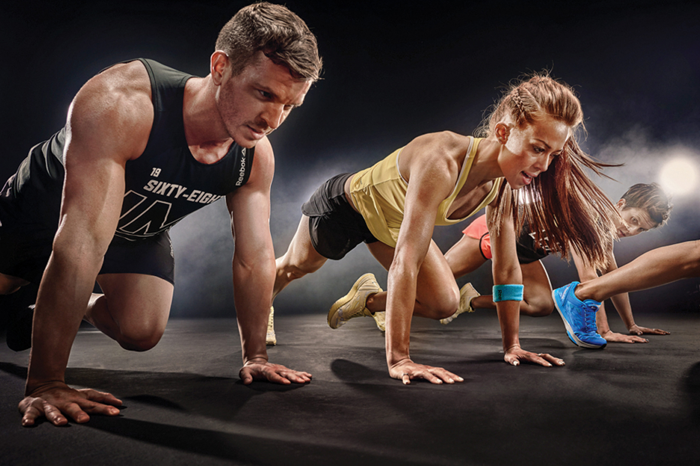

"Radi by ste jedli niečo, čo je chutné, zdravé a obsahuje veľa živín? Prinášame vám 10 fitness receptov, ktoré vám pomôžu dosiahnuť vaše ciele!
Pre športovcov je obzvlášť dôležité, aby dávali pozor na jedlo, keďže vravíme o základnom „palive“ čo sa týka výdrže, výkonu aj tvarovania postavy. Jedlo, ktoré zjete, poskytuje živiny vášmu telu, svalom, orgánom, mozgu a rovnako aj duši. Keď je kvalita živín správna, vy a váš výkon to odzrkadlia."

"Jedzte čo len chcete, hlavne kalorické jedlá z fastfoodov, pizzu každý deň a niekoľko litrov sladených nápojov každý deň. Pre istotu vypite ďalších 1000 kalórií v nejakom gaineri a číslo na váhe sa bude raketovo šplhať do výšin.
Aby ste sa neprejedli tým istým, občas si dajte poriadny burger, steak, alebo si počas dňa doprajte ako maškrtu niekoľko sladkostí."

"Spaľovače tukov patria medzi pomerne kontroverzné doplnky. Niektorí športovci si ich nemôžu dovoliť, iní ich kategoricky odmietajú. Cieľom dnešného článku však nie je hovoriť o tom, či sú spaľovače tukov užitočné alebo či ide o úplne zbytočný doplnok stravy, ktorému sa oplatí vyhnúť. Tejto téme sme sa na stránkach Fitness World venovali už niekoľkokrát, napríkladmôžu spaľovače tukov skutočne pomôcť pri chudnutí? Dnes sa zameriame na problematiku dávkovania spaľovačov tukov, konkrétne na riziká spojené s predávkovaním."

"Pokud jsem něco vypozoroval, je to důležitost živin v období několika hodin kolem tréninku. V dlouhodobém důsledku to může stát mezi menším či větším progresem. Recovery je navržen jako post-workout, tedy v době po tréninku, přesto je koncipován tak, aby měl využití kdykoli během dne. Zajistí zásadní funkční látky k nastartování anabolických procesů a podpoře regeneračních schopností těla."

"Je prerušovaná hladovka, alebo intermittent fasting, ako znie originálny názov, naozaj účinná, alebo je to len ďalšia módna vlna?
Môže mať naozaj benefity pre celkové zdravie tela, doslova zlepšiť život tak, ako to prezentujú jej priaznivci, dokonca spomaliť starnutie tela?""

"Sacharidy sú vedľa bielkovín a tukov jedna z troch základných makroživín v našom jedálničku. Napriek tomu ich však mnohí považujú za to najväčšie zlo v našej strave a snažia sa ich obmedzovať. Je to však nutné? Sacharidy sú predsa súčasťou mnohých procesov v tele a zároveň sú dokonca základným zdrojom energie pre mozog a intenzívny športový výkon. Nie nadarmo nám v žilách koluje krvný cukor a zásobu sacharidov máme aj vo svaloch a pečeni v podobe zásobného sacharidu glykogénu. Ako to teda so sacharidmi je? V dnešnom článku si v tom urobíme jasno."

"Ak ste započuli, že kreatín je jeden z mála doplnkov, ktoré nie sú nanič, tak ste počuli dobre. Je možno dokonca ešte viac preskúmaný ako proteín. Existuje k nemu niekoľko stoviek vedeckých štúdií a jeho účinky sú plne zdokumentované:"

"Vianoce klopú na dvere a rovnako ako každý rok si lámete hlavu, čím potešiť partnera, partnerku, súrodenca, rodičov, priateľov a ďalších blízkych? Pokiaľ sú nadšenci do fitness či zdravého životného štýlu, máme pre vás plno tipov, ktorými im rozhodne urobíte radosť. Inšpiráciu na darčeky nielen pre mužov a ženy tu však nájdu aj ostatní. Napríklad také pohodlné športové oblečenie je skvelé aj na prechádzky alebo nákupy. A fitness hodinky? Tie okrem presného času môžu prezradiť, ako veľmi ste aktívni a či dobre spíte. Nájdete tu ale samozrejme aj tipy na drobné vianočné darčeky, ktorými môžete potešiť prakticky kohokoľvek. Tak poďme na to!"

"Venovať sa akémukoľvek športu so sebou prináša nielen úspechy, ale aj rôzne úskalia. Tie nastávajú hlavne na začiatku a vtedy, keď sme ostýchaví a bojíme sa, že môžeme niečo pokaziť. Postupne sa začneme porovnávať s ostatnými a zvádzame boj vo svojej hlave. Ten sa naozaj môže podpísať na dosahovaní našich cieľov a celkových výsledkoch. V praxi to vyzerá napríklad tak, že prídeme do fitka a namiesto oslovenia trénera či skúsenejšieho športovca sa radšej sústredíme na nepodstatné veci."